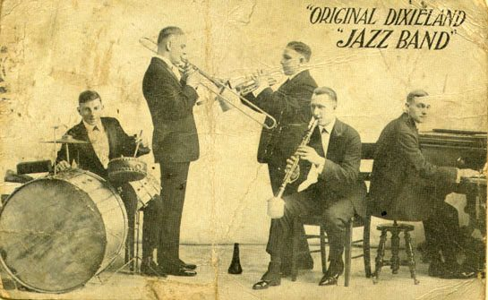
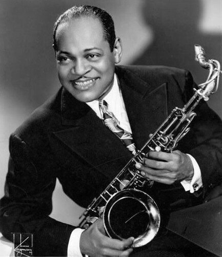
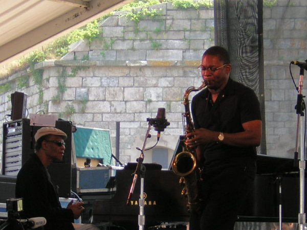
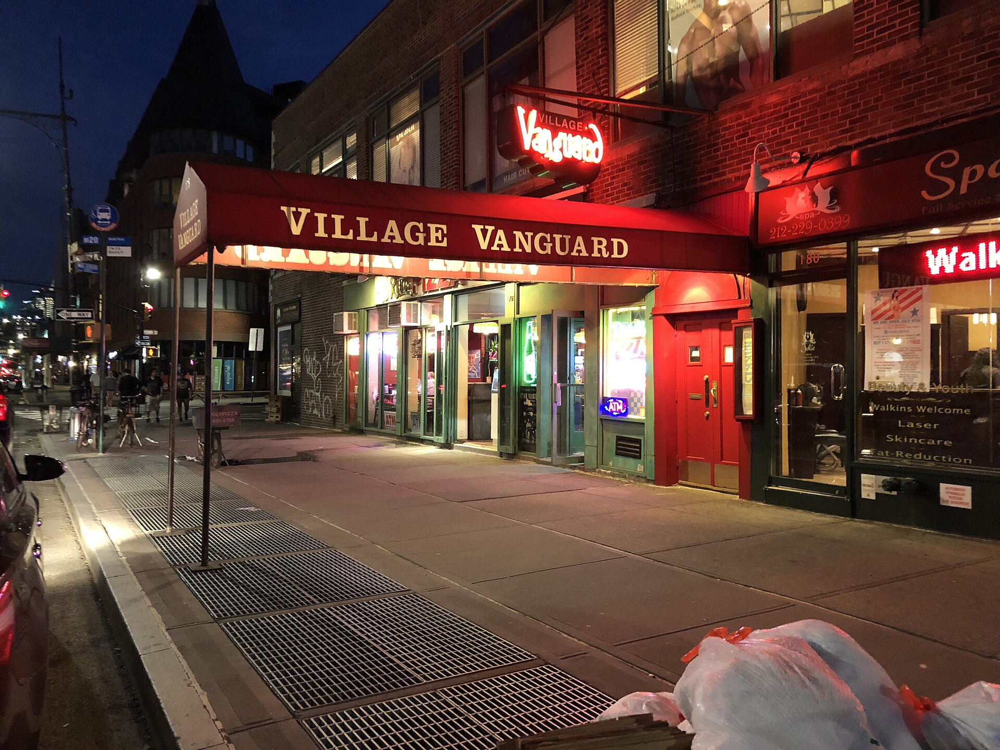

1890s
紐奧良的街頭
藍調、拉格泰姆、銅管樂隊和教會音樂在紐奧良交會。短號手 Buddy Bolden 被很多人稱為第一位爵士樂手，但他沒有留下任何錄音。
看展品說明＋先聽一首
從紐奧良的街頭，走到今天。六個展廳，按順序逛；每一件展品都可以點開，看說明、先聽一首。
爵士從哪裡來？從紐奧良的街頭、教會和舞廳開始。非洲的節奏、歐洲的和聲、藍調的憂傷，在一座港口城市裡相遇，再坐著火車和唱片，一路往北走到芝加哥和紐約。
藍調、拉格泰姆、銅管樂隊和教會音樂在紐奧良交會。短號手 Buddy Bolden 被很多人稱為第一位爵士樂手，但他沒有留下任何錄音。
看展品說明＋先聽一首Original Dixieland Jass Band 錄下〈Livery Stable Blues〉，被視為第一張爵士唱片。錄音的是一群白人樂手。
看展品說明＋先聽一首
Armstrong 開始錄 Hot Five 和 Hot Seven 系列，把獨奏推到爵士的中心。
看展品說明＋先聽一首
Ellington 樂團在哈林區的 Cotton Club 駐場，靠電台轉播紅遍全美。
看展品說明＋先聽一首
經濟大蕭條的年代，大家需要一點快樂。十幾個人的大樂團、能跳舞的搖擺節奏、電台轉播，讓爵士變成全美國的流行音樂。
Benny Goodman 樂團在洛杉磯 Palomar 舞廳的演出引起轟動，大樂團搖擺樂成為美國的流行音樂。同一年，Village Vanguard 開張。
看展品說明＋先聽一首
Benny Goodman 在卡內基音樂廳舉行爵士音樂會，古典音樂的殿堂第一次迎來一整晚的搖擺樂。
看展品說明＋先聽一首
Alfred Lion 和 Francis Wolff 在紐約創辦 Blue Note 唱片。同年 Coleman Hawkins 錄下〈Body and Soul〉。
看展品說明＋先聽一首
戰爭結束前後，一群年輕樂手在深夜的俱樂部裡，把爵士彈得更快、更複雜，不再是為了讓人跳舞，而是為了讓人坐下來聽。另一群人則往反方向走，讓爵士變得更柔、更酷。
Charlie Parker、Dizzy Gillespie、Thelonious Monk 在哈林區的俱樂部裡，把爵士變得更快、更複雜。
看展品說明＋先聽一首
Miles Davis 九重奏開始錄後來集結成《Birth of the Cool》的作品，帶出更柔和的聲音。
看展品說明＋先聽一首
Blue Note 開始把錄音交給在 Hackensack 客廳錄音的 Rudy Van Gelder。
看展品說明＋先聽一首
美國羅德島新港舉辦第一屆爵士音樂節，後來成為世界最重要的爵士音樂節之一。
看展品說明＋先聽一首
錄音技術成熟、黑膠唱片普及，爵士迎來最多經典誕生的十幾年。hard bop、調式爵士、巴薩諾瓦、自由爵士，好幾條路同時往前走。
Sonny Rollins 錄下《Saxophone Colossus》；同年 Duke Ellington 在新港音樂節的演出讓樂團重新翻紅。
看展品說明＋先聽一首
《Kind of Blue》《Giant Steps》《Time Out》《Mingus Ah Um》《The Shape of Jazz to Come》都在這一年錄音或發行。Sonny Rollins 退下舞台，走上大橋。
看展品說明＋先聽一首
Bill Evans 三重奏的五輪現場錄音。十一天後，貝斯手 Scott LaFaro 過世。
看展品說明＋先聽一首
Stan Getz 和 Charlie Byrd 的《Jazz Samba》把巴西的巴薩諾瓦帶進美國；1964 年的《Getz/Gilberto》讓〈The Girl from Ipanema〉紅遍全世界。
看展品說明＋先聽一首
John Coltrane 的《A Love Supreme》發行，一張唱片就是一段禱告。
看展品說明＋先聽一首
搖滾和放克佔領了排行榜，爵士樂手拿起電吉他和合成器。同時，爵士走進學校和音樂廳，被寫成教科書，也被稱為國家寶藏。
Miles Davis 的《Bitches Brew》把電吉他、電鋼琴和搖滾節奏帶進爵士，融合爵士時代開始。
看展品說明＋先聽一首一本手抄、沒有授權的曲譜在樂手之間影印流傳，成了全世界爵士樂手的共同語言。
看展品說明＋先聽一首
Keith Jarrett 在一台壞掉的鋼琴上即興，《The Köln Concert》後來賣了數百萬張。
看展品說明＋先聽一首
美國國會通過決議，稱爵士為「珍貴的美國國家寶藏」。
看展品說明＋先聽一首Hal Leonard 出版取得授權的《Real Book》，作曲家終於拿得到版稅。
看展品說明＋先聽一首爵士沒有變成博物館裡的東西。新一代的樂手把嘻哈、靈魂樂、電子音樂帶進來，在串流平台上找到新的聽眾。
Herbie Hancock 向 Joni Mitchell 致敬的《River: The Joni Letters》拿下葛萊美年度專輯，是《Getz/Gilberto》之後四十多年來第一張得獎的爵士專輯。
看展品說明＋先聽一首
爵士貝斯手兼歌手 Esperanza Spalding 拿下葛萊美最佳新人，是這個獎項第一次頒給爵士樂手。
看展品說明＋先聽一首薩克斯風手 Kamasi Washington 發行長達近三小時的三張唱片《The Epic》，在年輕聽眾之間爆紅，讓很多人第一次走進爵士。
看展品說明＋先聽一首電子報〈慢慢聽〉每期只講一張爵士唱片：那天在哪裡錄、台上是誰、你該聽哪一段。不用懂樂理，戴上耳機照著聽。
先追蹤 IG，電子報開放時通知你